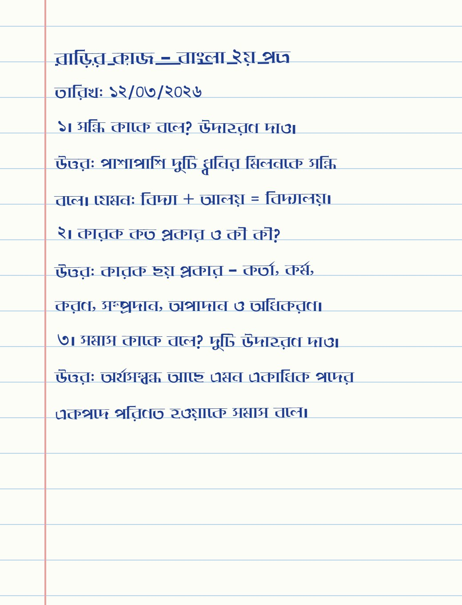
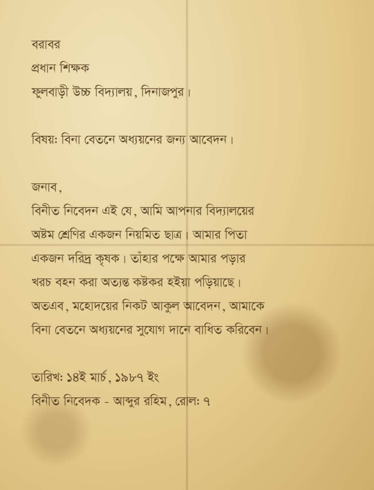
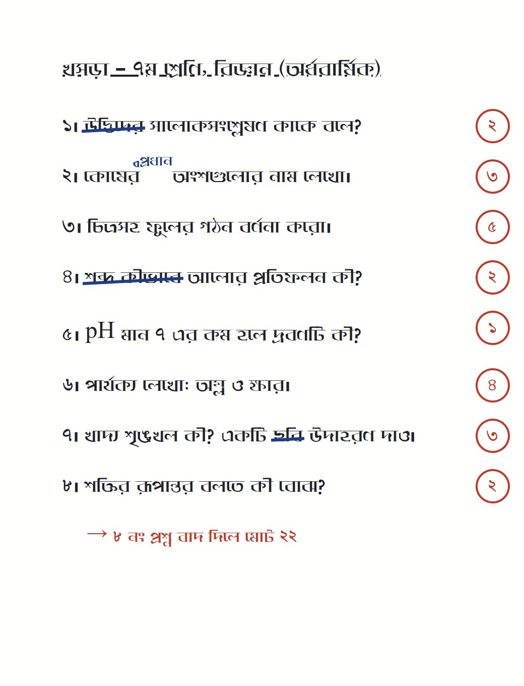
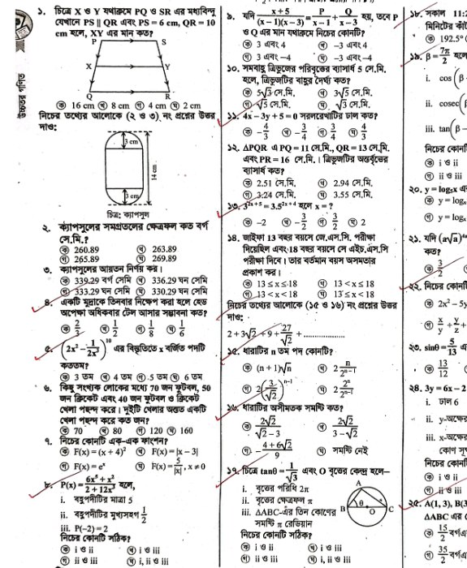
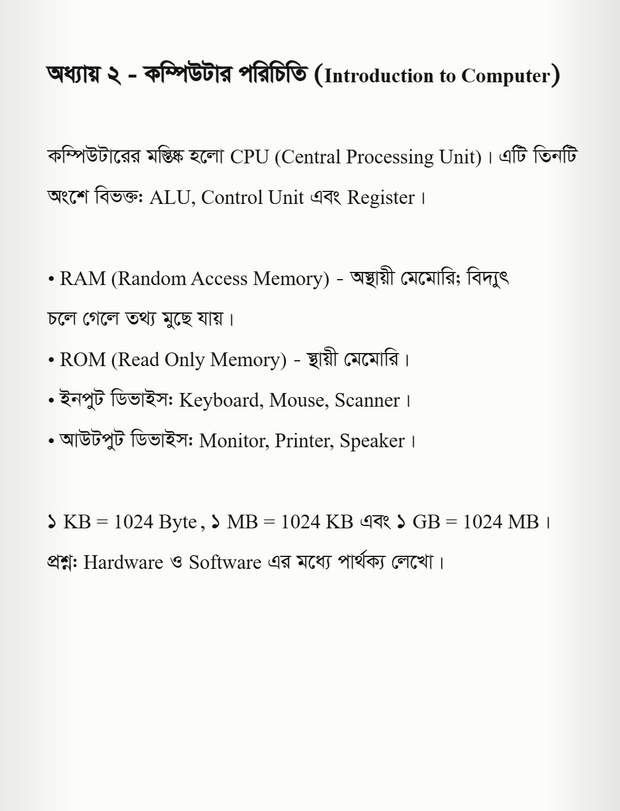
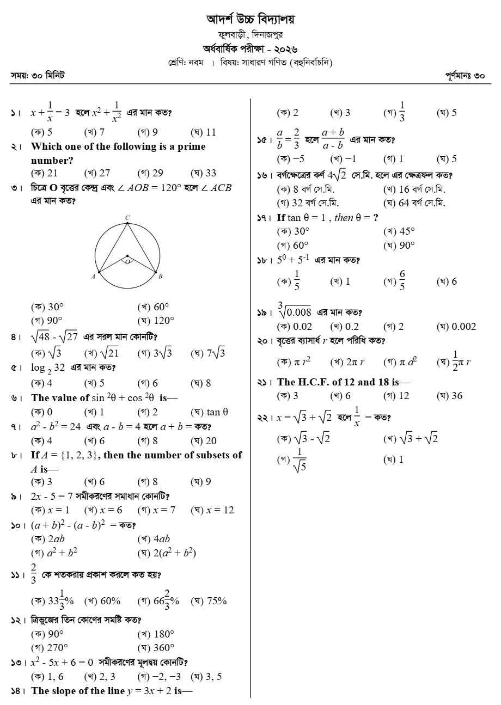

ছাপা পাতা, প্রশ্নপত্র বা স্ক্যান করা PDF দিন — লেআউট, টেবিল ও সমীকরণসহ সম্পাদনাযোগ্য Word ফাইল পাবেন।
ফাইল টানুন বা ড্রপ করুন
PDF, JPG, PNG, WEBP · একাধিক পাতা চলবে
আউটপুট: ইউনিকোড .docx · বিজয় .docx · Word 2003 .doc

প্রস্তুত হচ্ছে…
বড় ফাইলে কয়েক মিনিট লাগতে পারে। পাতাটি খোলা রাখুন।
রূপান্তরিত লেখা — এখানে ঠিক করলে ডাউনলোডেও সেটিই যাবে
আপনার মতামত আমাদের ঠিক করতে সাহায্য করবে। রিপোর্টটি আপনার কম্পিউটারেই নামবে — আমাদের পাঠিয়ে দিন।
কী সমস্যা হয়েছে? (একাধিক বাছতে পারেন)